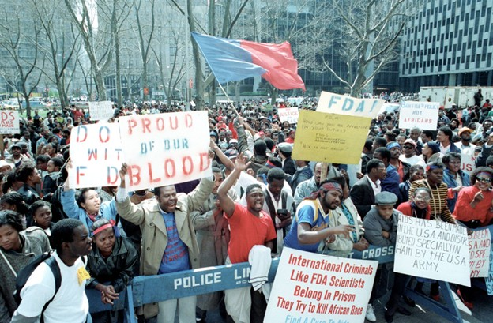
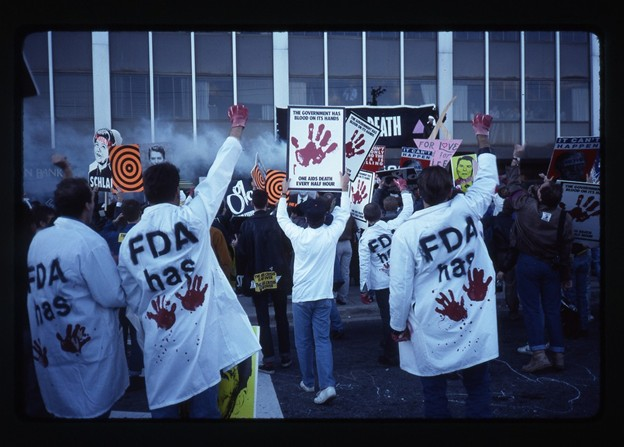
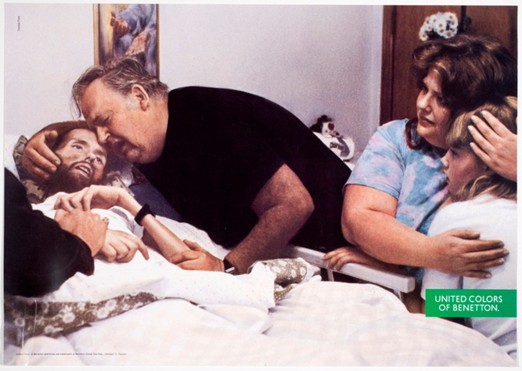

Haitian HIV Discrimination Protest
This image shows protesters demonstrating against the discrimination faced by Haitians who were unfairly labeled as a high-risk group for HIV/AIDS. During this period, Haitians experienced stigma, travel restrictions, and social exclusion due to misinformation about the disease. The protest highlights how HIV/AIDS discrimination was not only based on health status but also linked to nationality and race. This clearly shows marginalization through prejudice, fear, and unjust government policies, which denied people their rights and dignity.
Source:
Getty Images / Human Rights archives
Time and Place:
Early 1990s, United States

ACT UP Protest at the FDA
This image shows activists from ACT UP protesting outside the Food and Drug Administration (FDA), demanding faster access to HIV/AIDS treatment and lower drug costs. At the time, many patients were dying while waiting for approval of life-saving medication. The protest reflects the frustration of a marginalized group that was being ignored by the government and healthcare system. It highlights how people with HIV/AIDS faced inequality in healthcare, neglect, and limited access to treatment, forcing them to fight for their basic rights.
Source:
ACT UP / Getty Images
Time and Place:
October 11, 1988, Rockville, Maryland, USA

ACT UP Protest at the FDA
This image shows David Kirby in the final stages of AIDS, surrounded by his grieving family. It highlights the severe physical suffering caused by HIV/AIDS, as well as the stigma and fear that existed at the time. Many people with HIV/AIDS were rejected by society and even denied proper care. This demonstrates how the group was socially marginalized and emotionally isolated, making their struggle both medical and social.
Source:
Therese Frares
Time and Place:
1990, Ohio, USA